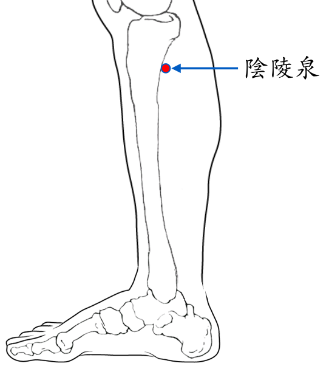

【穴位名稱】: 陰陵泉 (SP9)

【治療症狀】: 水腫 肚子痛 腹瀉 脫肛 急性腸胃炎 腸功能紊亂 腸梗阻、腸套疊 結核性腸炎(拉肚子) 咳嗽 血尿 小便不利 陽萎 遺精 腎炎、腎孟炎 前列腺炎 尿路感染 月經過多 經痛 閉經 子宮下垂 赤白帶下 不孕症 陰道癢 小兒驚厥 重癥肌無力 雷諾氏病→末端血液循環差 膝蓋變形 腰酸腰痛 關節疼痛 蕁麻疹 濕疹 丹毒 前頭痛 肥胖 眩暈
【取穴位置】: 小腿內側，脛骨內側髁後下方凹陷處。與陽陵泉相對，當脛骨內側緣與腓腸肌之間，比目魚肌起點部上方。《靈樞·本輸》：「輔骨之下，陷者之中也」；《針灸甲乙經》補充：「在膝下內側……」；《針方六集》：「輔骨下一指」；《神應經》：「屈膝取之，膝橫紋頭下是穴。與陽陵泉相對，稍高一寸。」
【針刺方法】: 直刺0.5～1.5吋。可灸。